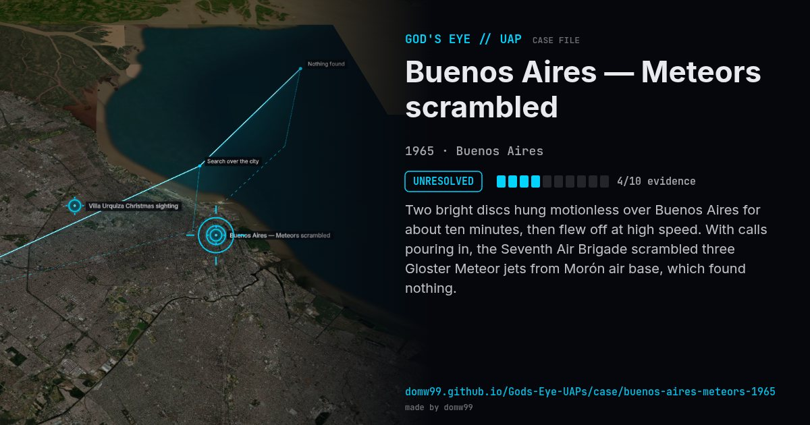

Buenos Aires — Meteors scrambled
UNRESOLVED

Two bright discs hung motionless over Buenos Aires for about ten minutes, then flew off at high speed. With calls pouring in, the Seventh Air Brigade scrambled three Gloster Meteor jets from Morón air base, which found nothing.
What was seen
Shape: Two bright discs
Witnesses: Many residents; Argentine Air Force
Duration: About 10 minutes
Sources
Browse
- Argentina
- 1960s
- Unresolved
- Military encounters
- Many independent witnesses
- Military witnesses
- Photographs
- Discs and saucers